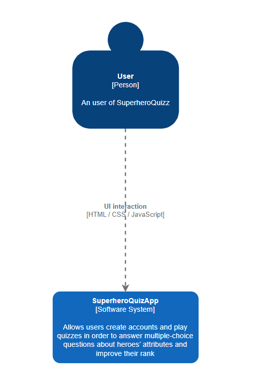
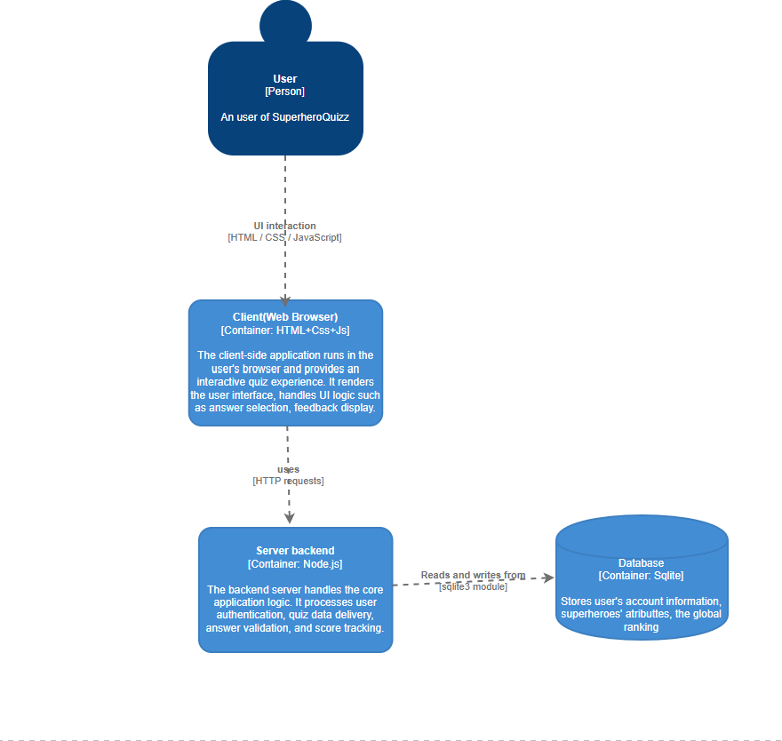
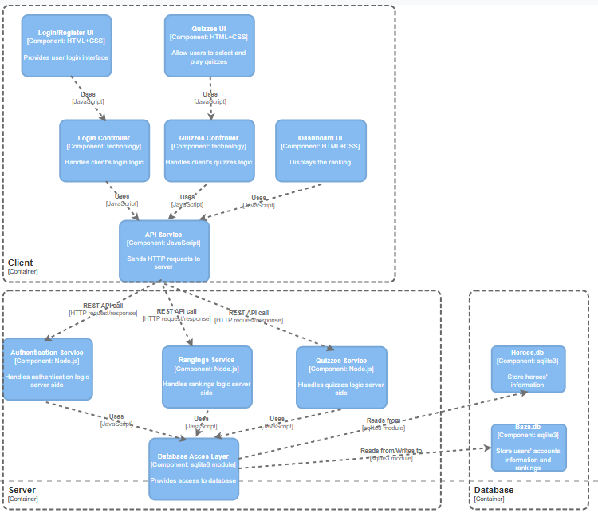

System Requirements Specification - Superhero Quiz
1. Introducere
Acest document descrie cerințele software și arhitectura aplicației web Superhero Quiz, un
joc educativ destinat copiilor, care oferă quiz-uri tematice despre supereroii Marvel și DC. Aplicația oferă
o experiență interactivă de învățare, încurajând participarea prin mecanici de joc precum scor, vieți și
clasamente.
2. Descriere generală
Superhero Quiz este o aplicație web compusă dintr-un frontend dezvoltat în HTML, CSS și JavaScript și un
backend Node.js, conectat la o bază de date SQLite. Utilizatorii trebuie să fie autentificați pentru a
accesa quiz-urile, care includ întrebări cu variante de răspuns și feedback imediat.
Aplicația este complet responsive, implementând suport pentru internaționalizare și accesibilitate conform
standardelor WAI-ARIA.
3. Cerințe funcționale
- RF1: Creare și autentificare conturi utilizator.
- RF2: Acces restricționat la quiz-uri doar pentru utilizatori autentificați.
- RF3: 6 quiz-uri disponibile cu tematici Marvel și DC.
- RF4: Întrebări cu variante multiple de răspuns.
- RF5: Feedback imediat pentru fiecare răspuns.
- RF6: Sistem de vieți: utilizatorul are 3 vieți per quiz.
- RF7: Calcularea și afișarea scorului la final.
- RF8: Clasament global cu toți utilizatorii.
- RF9: Suport pentru limbi multiple (i18n).
- RF10: Interfață responsive și accesibilă.
4. Cerințe non-funcționale
- NFR1: Timp de răspuns sub 1 secundă pentru interacțiuni uzuale.
- NFR2: Compatibilitate cu browsere moderne.
- NFR3: Persistența fiabilă a datelor în SQLite.
- NFR4: Cod modular și documentat.
- NFR5: Suport cel puțin pentru română și engleză.
- NFR6: Design adaptabil pentru mobil și desktop.
5. Etapele dezvoltării
- Analiză cerințe – definirea funcționalităților esențiale.
- Prototip UI – machetă statică HTML/CSS.
- Backend API – autentificare, scor, vieți, ranking.
- Persistență – conectare cu SQLite pentru salvare date.
- Funcționalități avansate – feedback per întrebare, vieți, ranking live.
- Testare și responsive – validare UX/UI pe dispozitive diverse.
- Publicare și documentație – integrare Scholarly HTML și lansare finală.
6. Arhitectura de ansamblu (Modelul C4)
6.1. Nivel 1 – Context Diagram

6.2. Nivel 2 – Container Diagram

6.3. Nivel 3 – Component Diagram

7. Concluzii
Superhero Quiz oferă o platformă educațională interactivă pentru copii, construită cu tehnologii web
moderne, ce respectă cerințele de accesibilitate, responsivitate și internaționalizare. Arhitectura modulară
și abordarea incrementală de dezvoltare permit scalabilitate și mentenanță facilă.